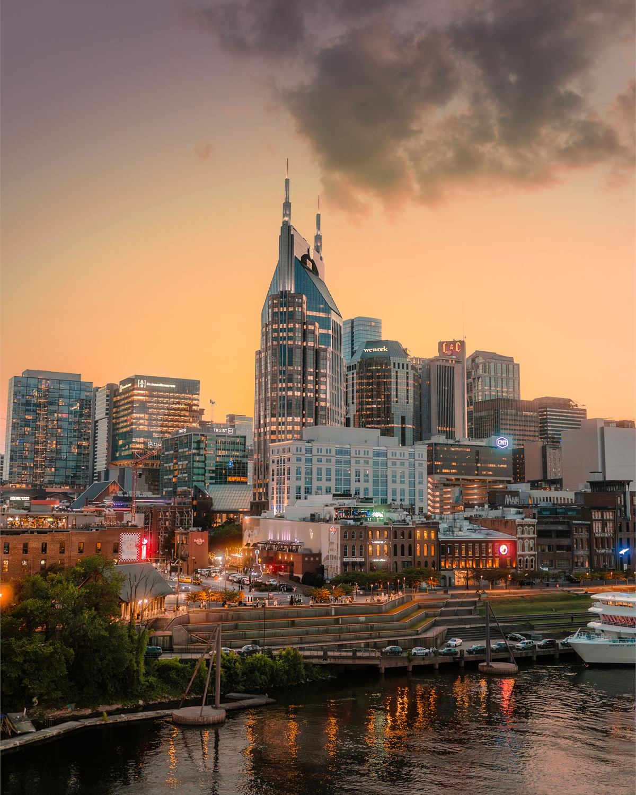

01
Climate risk assessment & urban flooding
How do hydrologic hazards become unequal urban risk and disruption?
Flood processes, drainage and transportation networks, exposure, insurance, emergency access and community resilience.
Explore →Urban Hydrosystems & Resilience Lab
We study cities as coupled systems — how hydrologic processes and infrastructure interact with human behavior, institutions and socioeconomic conditions to shape urban risk, sustainability, equity and resilience across space and time.
 Led by Koorosh Azizi, Ph.D., Assistant Professor of Civil & Architectural Engineering at Tennessee State University.
Led by Koorosh Azizi, Ph.D., Assistant Professor of Civil & Architectural Engineering at Tennessee State University.

Physical, behavioral, institutional and spatial processes are analyzed together.
Households, neighborhoods, infrastructure networks, utilities and governance systems.
Models and evidence that clarify trade-offs, mechanisms and decision leverage points.
Research
Our projects span different parts of the urban water cycle, but they share a common question: how do environmental processes, infrastructure and collective decisions interact to produce different outcomes across communities and over time?
Climate risk assessment & urban flooding
Flood processes, drainage and transportation networks, exposure, insurance, emergency access and community resilience.
Explore →Urban water systems & sustainability transitions
Water scarcity, conservation, utility institutions, finance, infrastructure condition, affordability and equity.
Explore →Stormwater infrastructure, behavior & governance
Green stormwater infrastructure, adoption, maintenance, hydrologic connectivity, social influence and governance networks.
Explore →How we work
Urban water outcomes cannot be explained by physical processes alone. We combine engineering models with spatial, behavioral and institutional analysis to understand feedbacks, unintended consequences and uneven impacts.
See the research approach →Current work
Current projects extend the lab's coupled-systems approach across Nashville, Austin, the U.S. Gulf Coast and national-scale data.
Linking flood hazard, transportation-network vulnerability and access to critical destinations.
Research context →Connecting household decisions, spatial feasibility, drainage leverage and maintenance.
Research context →Examining how hazard, participation, coverage and pricing combine to leave households under-protected.
Research context →Studying feedbacks among conservation, finance, infrastructure, service reliability and household burden.
Research context →Selected publications
Join the UHR Lab
We welcome students who want to connect hydrology and infrastructure with spatial analysis, human behavior, governance and real-world decision making.